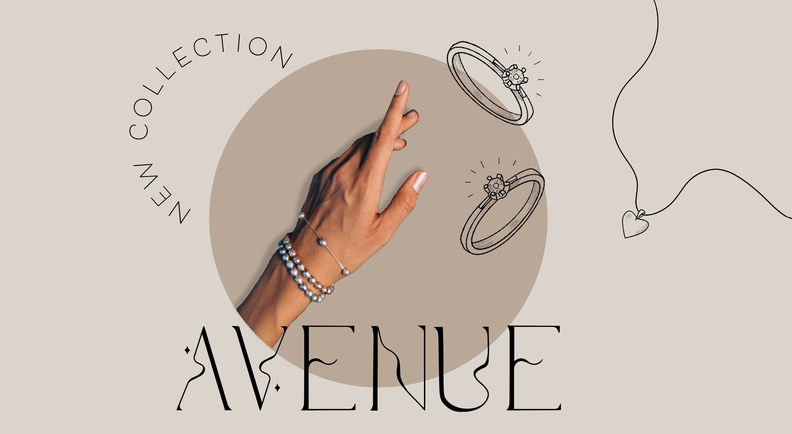

Denne font er en display font, med serifer. Seriferne er atypiske eftersom de kun er halvt på bogstavets henholdsvis højre og venstre side. Skriften har optimale propotioner, som definere hvor x-aksen er. Desuden er den optisk, da der bliver brudt med det matematiske, der hvor bogstaverne ‘bølger’. Fonten er elegant og har både bløde og kantede former, som giver den et roligt men skarpt udtryk. Denne font er udtænkte til at kunne anvendes til forskelligt samspil med grafiske elementer, hvor den både kan fungere minimalistisk og futuristisk.
Jeg startede med at finde inspration til konceptet, og hertil fandt jeg også inspiration til forskellige fonte på henholdvis Pinterest, Google og Unsplash.
Da jeg havde lavet et moodboard og style tile, begyndte jeg at lave nogle forskellige udkast i illustrator. Dog opdagede jeg at det var nemmere, at tegne det i Procreate og og lave udkast der.
Efter at have fundet de rette bogastaver, og lavet skrifttypen anvendte jeg illustrators tool 'Image trace'. Hertil fik jeg tegninger jeg havde lavet omdannet til vectorgrafik.